Enciclopedia
Historia del derecho en España y Catalunya
De las leyes de bronce de Roma al Codi civil de Catalunya: veintiuna épocas, sus cambios, anécdotas y las personas que los hicieron posibles.
Las épocas
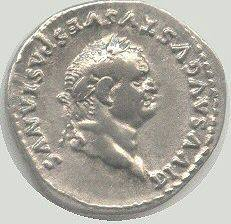
s. II a. C. – s. VHispania romanaRoma trajo a la península su derecho, que es la base de casi todo el derecho civil actual: propiedad, contratos, herencias y familia. s. V – 711El reino visigodoLos visigodos empezaron aplicando un derecho para ellos y otro para los hispanorromanos. En el siglo VII unificaron ambos en un solo código.
s. V – 711El reino visigodoLos visigodos empezaron aplicando un derecho para ellos y otro para los hispanorromanos. En el siglo VII unificaron ambos en un solo código. 711 – s. XIIIAl-Ándalus y los fuerosDurante siglos convivieron el derecho islámico de al-Ándalus, el derecho judío y el de los reinos cristianos, donde cada villa recibía su propio fuero.
711 – s. XIIIAl-Ándalus y los fuerosDurante siglos convivieron el derecho islámico de al-Ándalus, el derecho judío y el de los reinos cristianos, donde cada villa recibía su propio fuero. s. XI – s. XVCatalunya medieval: Usatges y ConstitucionsCatalunya creó un derecho propio y un sistema en el que el rey no podía hacer leyes solo: necesitaba el acuerdo de las Corts.
s. XI – s. XVCatalunya medieval: Usatges y ConstitucionsCatalunya creó un derecho propio y un sistema en el que el rey no podía hacer leyes solo: necesitaba el acuerdo de las Corts.- 1283 – 1714Las Corts y la GeneralitatEn la Corona de Aragón el rey no podía legislar solo: las leyes se pactaban con las Corts, y una comisión permanente, la Generalitat, vigilaba que se cumplieran.
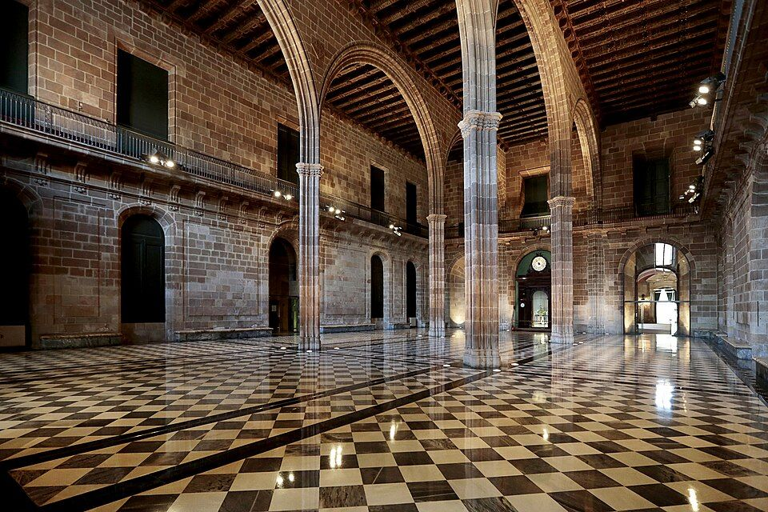
s. XIII – s. XVIIIEl Consolat de Mar y el derecho mercantilLos mercaderes de Barcelona y de otros puertos de la Corona de Aragón crearon tribunales propios y un código de costumbres marítimas que se usó en todo el Mediterráneo. s. XIII – s. XVAlfonso X y el derecho de CastillaCastilla intentó sustituir los fueros locales por un derecho común para todo el reino, inspirado en el derecho romano.
s. XIII – s. XVAlfonso X y el derecho de CastillaCastilla intentó sustituir los fueros locales por un derecho común para todo el reino, inspirado en el derecho romano. s. XVI – s. XVIILa Monarquía Hispánica y AméricaLa llegada a América planteó una pregunta nueva: ¿qué derechos tenían los pueblos indígenas? De ese debate nació el derecho internacional moderno.
s. XVI – s. XVIILa Monarquía Hispánica y AméricaLa llegada a América planteó una pregunta nueva: ¿qué derechos tenían los pueblos indígenas? De ese debate nació el derecho internacional moderno.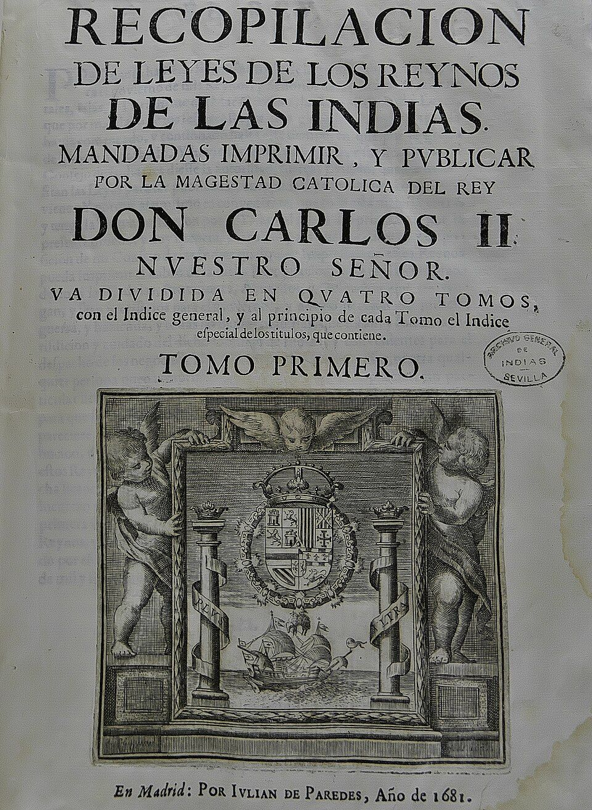
1492 – 1824El derecho de IndiasLa conquista de América obligó a crear un derecho nuevo para territorios lejanos y para pueblos con sus propias costumbres. Fue también el escenario del primer gran debate sobre los derechos de los pueblos indígenas. 1478 – 1834La InquisiciónDurante más de tres siglos un tribunal dependiente de la Corona persiguió la herejía con un procedimiento secreto, sin derecho a conocer al acusador. Su abolición fue una de las grandes batallas del liberalismo.
1478 – 1834La InquisiciónDurante más de tres siglos un tribunal dependiente de la Corona persiguió la herejía con un procedimiento secreto, sin derecho a conocer al acusador. Su abolición fue una de las grandes batallas del liberalismo. 1707 – 1716La Nueva PlantaTras la Guerra de Sucesión, Felipe V suprimió las instituciones y leyes públicas de la Corona de Aragón y extendió el modelo de Castilla.
1707 – 1716La Nueva PlantaTras la Guerra de Sucesión, Felipe V suprimió las instituciones y leyes públicas de la Corona de Aragón y extendió el modelo de Castilla. 1716 – 1808La IlustraciónEl siglo XVIII quiso gobernar con la razón: reformas económicas, críticas a los privilegios y las primeras ideas de igualdad ante la ley.
1716 – 1808La IlustraciónEl siglo XVIII quiso gobernar con la razón: reformas económicas, críticas a los privilegios y las primeras ideas de igualdad ante la ley. 1808 – 1874Cádiz y el liberalismoDurante la guerra contra Napoleón, las Cortes reunidas en Cádiz aprobaron la primera Constitución española. El siglo XIX fue una lucha constante entre absolutismo y libertades.
1808 – 1874Cádiz y el liberalismoDurante la guerra contra Napoleón, las Cortes reunidas en Cádiz aprobaron la primera Constitución española. El siglo XIX fue una lucha constante entre absolutismo y libertades.- 1868 – 1874El Sexenio DemocráticoLa revolución de 1868 expulsó a Isabel II y trajo la constitución más avanzada de la Europa de su tiempo: sufragio universal masculino, libertad de cultos y derechos que ningún gobierno podía suprimir.
 1822 – 1900La codificaciónEl siglo XIX quiso ordenar todo el derecho en códigos claros, uno por materia. El gran debate fue qué hacer con los derechos civiles propios de Catalunya y otros territorios.
1822 – 1900La codificaciónEl siglo XIX quiso ordenar todo el derecho en códigos claros, uno por materia. El gran debate fue qué hacer con los derechos civiles propios de Catalunya y otros territorios.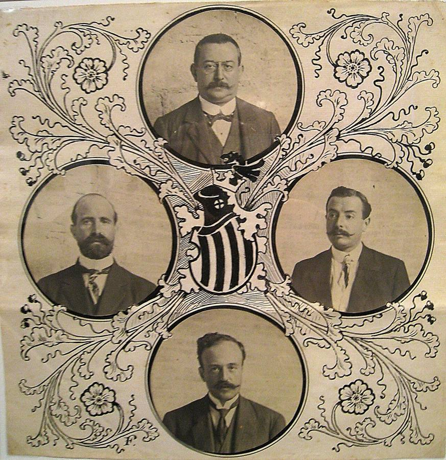
1874 – 1931Restauración y MancomunitatCon la vuelta de la monarquía llegó una larga etapa de estabilidad formal, con elecciones amañadas, las primeras leyes sociales y el primer autogobierno catalán moderno.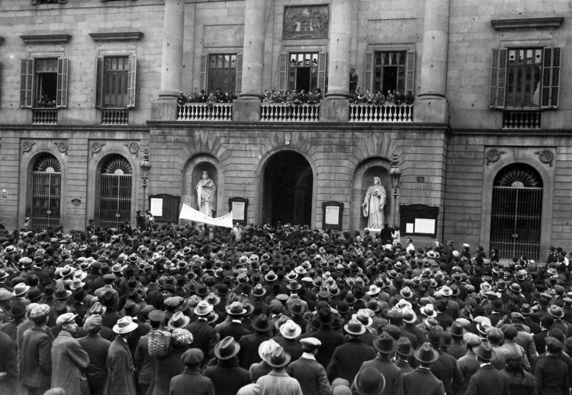
1873 – 1980Nace el derecho del trabajoLa industrialización llenó las fábricas de jornadas de doce horas, niños trabajando y accidentes sin indemnización. En un siglo, las leyes pasaron de ignorar al obrero a reconocerle derechos básicos.- 1931 – 1975La II República y el franquismoLa República trajo el voto de la mujer, el divorcio y la primera autonomía de Catalunya. La dictadura de Franco suprimió todo ello durante casi cuarenta años.
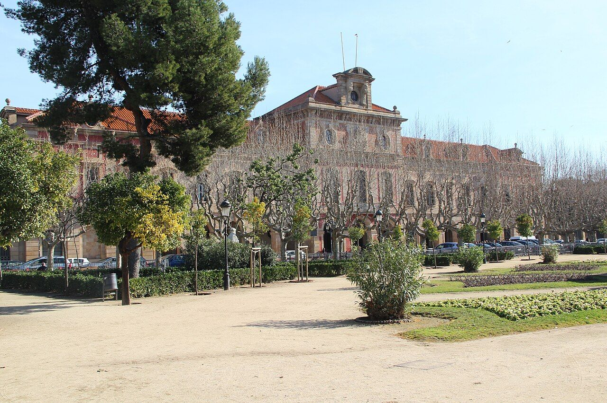
1960 – hoyDel derecho civil catalán compilado al Codi civilTras siglos de leyes dispersas, el derecho civil catalán se recogió en 1960 en una Compilación. Con la democracia, el Parlament lo convirtió en un Codi civil propio, completado en 2017. 1975 – hoyTransición y democraciaLa Constitución de 1978 organizó España como un Estado de las autonomías. Catalunya recuperó la Generalitat y la capacidad de legislar su derecho civil.
1975 – hoyTransición y democraciaLa Constitución de 1978 organizó España como un Estado de las autonomías. Catalunya recuperó la Generalitat y la capacidad de legislar su derecho civil.- 1986 – hoyEspaña en la Unión EuropeaLa entrada en la Comunidad Europea en 1986 cambió para siempre el derecho español: hoy buena parte de las leyes sobre consumo, medio ambiente, datos o competencia nacen en Bruselas y Estrasburgo.
Los personajes
 Isidoro de Sevillac. 560 – 636Obispo de Sevilla y sabiovisigodo
Isidoro de Sevillac. 560 – 636Obispo de Sevilla y sabiovisigodo Recesvinto? – 672Rey visigodovisigodo
Recesvinto? – 672Rey visigodovisigodo Alarico II? – 507Rey visigodovisigodo
Alarico II? – 507Rey visigodovisigodo Chindasvintoc. 563 – 653Rey visigodovisigodo
Chindasvintoc. 563 – 653Rey visigodovisigodo Fernando III el Santoc. 1200 – 1252Rey de Castilla y de Leónfueros
Fernando III el Santoc. 1200 – 1252Rey de Castilla y de Leónfueros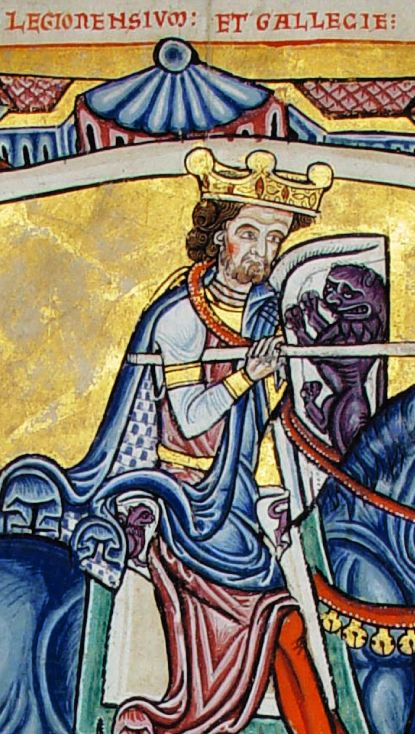
Alfonso IX de León1171 – 1230Rey de Leónfueros Ramon Berenguer Ic. 1023 – 1076Conde de Barcelonacatalunya-medieval
Ramon Berenguer Ic. 1023 – 1076Conde de Barcelonacatalunya-medieval Jaime I el Conquistador1208 – 1276Rey de Aragón, de Mallorca y de Valencia, y conde de Barcelonacatalunya-medieval
Jaime I el Conquistador1208 – 1276Rey de Aragón, de Mallorca y de Valencia, y conde de Barcelonacatalunya-medieval Pere el Gran1240 – 1285Rey de Aragón y conde de Barcelonacatalunya-medieval
Pere el Gran1240 – 1285Rey de Aragón y conde de Barcelonacatalunya-medieval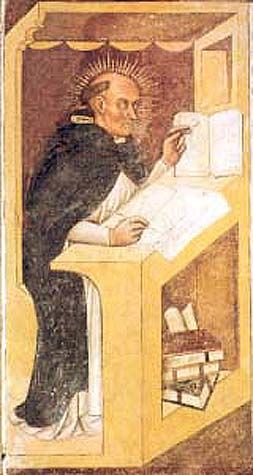
Ramon de Penyafortc. 1180 – 1275Jurista y fraile dominicocatalunya-medieval Alfonso X el Sabio1221 – 1284Rey de Castilla y de Leóncastilla
Alfonso X el Sabio1221 – 1284Rey de Castilla y de Leóncastilla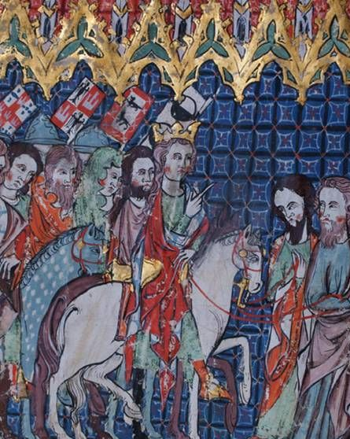
Alfonso XI de Castilla1311 – 1350Rey de Castillacastilla Isabel I de Castilla1451 – 1504Reina de Castillamonarquia
Isabel I de Castilla1451 – 1504Reina de Castillamonarquia Francisco de Vitoriac. 1483 – 1546Teólogo y padre del derecho internacionalmonarquia
Francisco de Vitoriac. 1483 – 1546Teólogo y padre del derecho internacionalmonarquia Bartolomé de las Casas1484 – 1566Defensor de los pueblos indígenasmonarquia
Bartolomé de las Casas1484 – 1566Defensor de los pueblos indígenasmonarquia Pau Claris1586 – 1641Presidente de la Generalitatmonarquia
Pau Claris1586 – 1641Presidente de la Generalitatmonarquia Tomás de Torquemada1420 – 1498Primer inquisidor generalinquisicion
Tomás de Torquemada1420 – 1498Primer inquisidor generalinquisicion Felipe V1683 – 1746Rey de España, primero de la dinastía Borbónnueva-planta
Felipe V1683 – 1746Rey de España, primero de la dinastía Borbónnueva-planta Rafael Casanova1660 – 1743Conseller en cap de Barcelona en 1714nueva-planta
Rafael Casanova1660 – 1743Conseller en cap de Barcelona en 1714nueva-planta Carlos III1716 – 1788Rey de Españailustracion
Carlos III1716 – 1788Rey de Españailustracion Pedro Rodríguez de Campomanes1723 – 1802Jurista y ministro ilustradoilustracion
Pedro Rodríguez de Campomanes1723 – 1802Jurista y ministro ilustradoilustracion Gaspar Melchor de Jovellanos1744 – 1811Jurista, escritor y político ilustradocadiz
Gaspar Melchor de Jovellanos1744 – 1811Jurista, escritor y político ilustradocadiz Agustín Argüelles1776 – 1844Diputado en las Cortes de Cádizcadiz
Agustín Argüelles1776 – 1844Diputado en las Cortes de Cádizcadiz Fernando VII1784 – 1833Rey de Españacadiz
Fernando VII1784 – 1833Rey de Españacadiz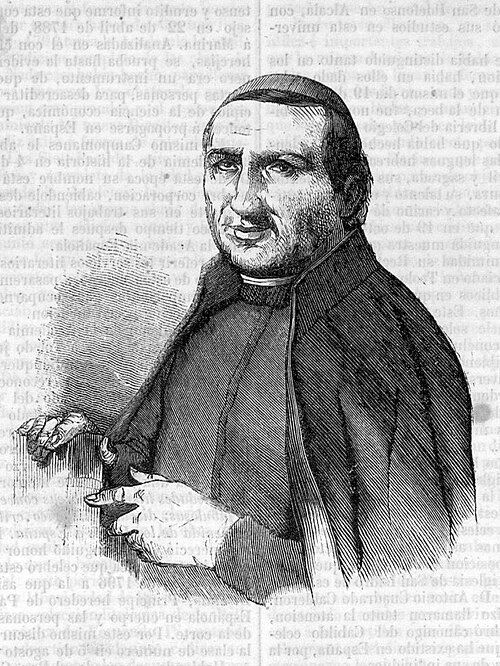
Francisco Martínez Marina1754 – 1833Historiador del derechocadiz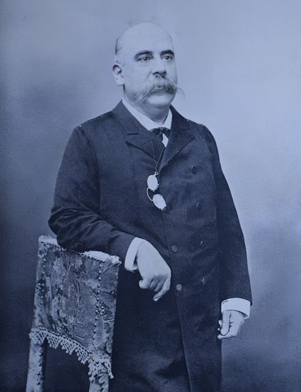
Emilio Castelar1832 – 1899Presidente de la Primera Repúblicacadiz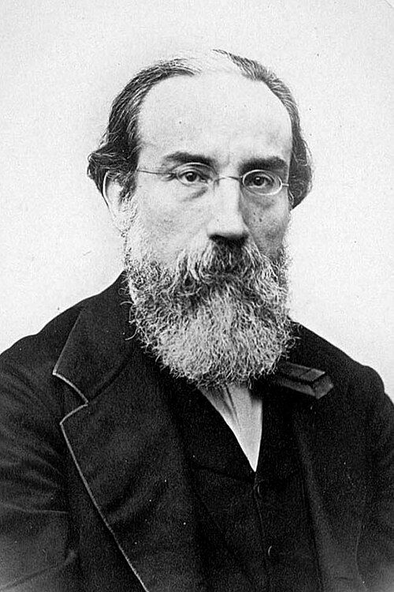
Francesc Pi i Margall1824 – 1901Presidente de la Primera Repúblicacadiz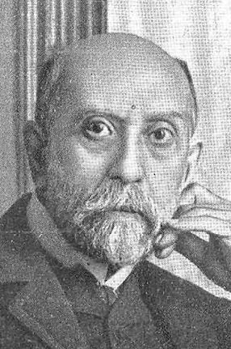
Nicolás Salmerón1838 – 1908Presidente de la Primera Repúblicasexenio Manuel Alonso Martínez1827 – 1891Ministro de Gracia y Justiciacodificacion
Manuel Alonso Martínez1827 – 1891Ministro de Gracia y Justiciacodificacion Manuel Duran i Bas1823 – 1907Jurista y político cataláncodificacion
Manuel Duran i Bas1823 – 1907Jurista y político cataláncodificacion Concepción Arenal1820 – 1893Jurista, escritora y reformadora de las cárcelescodificacion
Concepción Arenal1820 – 1893Jurista, escritora y reformadora de las cárcelescodificacion Joaquín Costa1846 – 1911Jurista, historiador y regeneracionistacodificacion
Joaquín Costa1846 – 1911Jurista, historiador y regeneracionistacodificacion Enric Prat de la Riba1870 – 1917Primer presidente de la Mancomunitatrestauracion
Enric Prat de la Riba1870 – 1917Primer presidente de la Mancomunitatrestauracion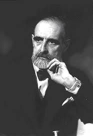
Francesc Cambó1876 – 1947Político de la Lliga Regionalistarestauracion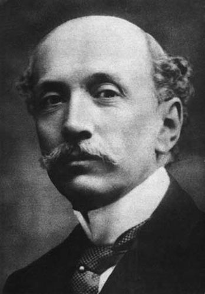
Eduardo Dato1856 – 1921Impulsor de las primeras leyes socialestrabajo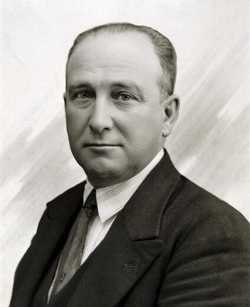
Francisco Largo Caballero1869 – 1946Ministro de Trabajo de la Repúblicatrabajo Clara Campoamor1888 – 1972Abogada y diputadarepublica
Clara Campoamor1888 – 1972Abogada y diputadarepublica Victoria Kent1891 – 1987Abogada, diputada y directora general de Prisionesrepublica
Victoria Kent1891 – 1987Abogada, diputada y directora general de Prisionesrepublica Francesc Macià1859 – 1933Presidente de la Generalitat de Catalunyarepublica
Francesc Macià1859 – 1933Presidente de la Generalitat de Catalunyarepublica Manuel Azaña1880 – 1940Presidente del Gobierno y de la Repúblicarepublica
Manuel Azaña1880 – 1940Presidente del Gobierno y de la Repúblicarepublica Lluís Companys1882 – 1940Presidente de la Generalitatrepublica
Lluís Companys1882 – 1940Presidente de la Generalitatrepublica Niceto Alcalá-Zamora1877 – 1949Primer presidente de la II Repúblicarepublica
Niceto Alcalá-Zamora1877 – 1949Primer presidente de la II Repúblicarepublica Luis Jiménez de Asúa1889 – 1970Penalista y padre de la Constitución de 1931republicaFernando de los Ríos1879 – 1949Ministro de Justicia y de Instrucción Públicarepublica
Luis Jiménez de Asúa1889 – 1970Penalista y padre de la Constitución de 1931republicaFernando de los Ríos1879 – 1949Ministro de Justicia y de Instrucción Públicarepublica Josep Tarradellas1899 – 1988Presidente de la Generalitat en el exilio y a su regresodemocracia
Josep Tarradellas1899 – 1988Presidente de la Generalitat en el exilio y a su regresodemocracia Gregorio Peces-Barba1938 – 2012Uno de los siete «padres de la Constitución»democracia
Gregorio Peces-Barba1938 – 2012Uno de los siete «padres de la Constitución»democracia Adolfo Suárez1932 – 2014Presidente del Gobierno de la Transicióndemocracia
Adolfo Suárez1932 – 2014Presidente del Gobierno de la Transicióndemocracia Torcuato Fernández-Miranda1915 – 1980Arquitecto jurídico de la Transicióndemocracia
Torcuato Fernández-Miranda1915 – 1980Arquitecto jurídico de la Transicióndemocracia Miquel Roca i Junyentn. 1940Uno de los siete «padres de la Constitución»democracia
Miquel Roca i Junyentn. 1940Uno de los siete «padres de la Constitución»democracia Jordi Solé Tura1930 – 2009Uno de los siete «padres de la Constitución»democracia
Jordi Solé Tura1930 – 2009Uno de los siete «padres de la Constitución»democracia Francisco Tomás y Valiente1932 – 1996Historiador del derecho y presidente del Tribunal Constitucionaldemocracia
Francisco Tomás y Valiente1932 – 1996Historiador del derecho y presidente del Tribunal Constitucionaldemocracia Manuel Fraga1922 – 2012Ponente de la Constitucióndemocracia
Manuel Fraga1922 – 2012Ponente de la ConstitucióndemocraciaMás personajes
- Trajano53 – 117 · Emperador romano nacido en Itálica
- Berenguer de Cruïlles? – 1362 · Obispo de Girona y primer presidente de la Generalitat
- Pere el Cerimoniós1319 – 1387 · Rey de la Corona de Aragón
- Domingo de Soto1494 – 1560 · Teólogo y jurista de la Escuela de Salamanca
- Juan de Solórzano Pereira1575 – 1655 · Jurista del derecho de Indias
- Juan Antonio Llorente1756 – 1823 · Historiador crítico de la Inquisición
- José Patiño1666 – 1736 · Ministro de Felipe V
- Manuel de Lardizábal1739 – 1820 · Penalista ilustrado
- Diego Muñoz Torrero1761 – 1829 · Diputado en las Cortes de Cádiz
- Joan Prim1814 – 1870 · General y presidente del Gobierno
- Florencio García Goyena1783 – 1855 · Autor del proyecto de Código Civil de 1851
- Mercedes Formica1913 – 2002 · Abogada y escritora
- Federica Montseny1905 – 1994 · Primera mujer ministra de España
- Ramon Maria Roca i Sastre1899 – 1979 · Notario y autor de la Compilació de 1960
- Encarna Roca i Triasn. 1944 · Civilista y magistrada del Tribunal Constitucional
- María Telo1915 – 2014 · Abogada y pionera de la igualdad legal
- Felipe Gonzálezn. 1942 · Presidente del Gobierno que firmó la entrada en Europa
Los retratos proceden de Wikimedia Commons y son de dominio público o tienen licencia libre. Cada imagen indica su autor y licencia.